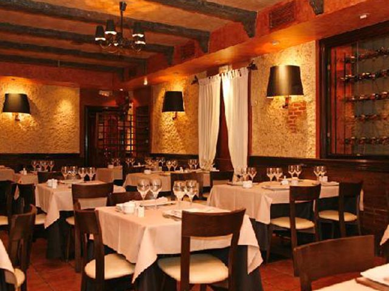

|  |
Rincon de los Andes
Juez del Valle 611 Tel: 011 4590-7042
|
El Rincón de los Andes, situado a los pies de una colina a sólo 200 metros del lago Lakar, ofrece un bonito alojamiento con cocina y conexión Wi-Fi gratuita. Dispone de una sauna, una piscina climatizada y un restaurante. Los apartamentos del Rincón de los Andes cuentan con mobiliario de madera de estilo rústico. Sus cocinas están totalmente equipadas, con microondas y nevera. Todos los apartamentos disponen de grandes ventanas con vistas a las montañas. Algunos tienen horno. |